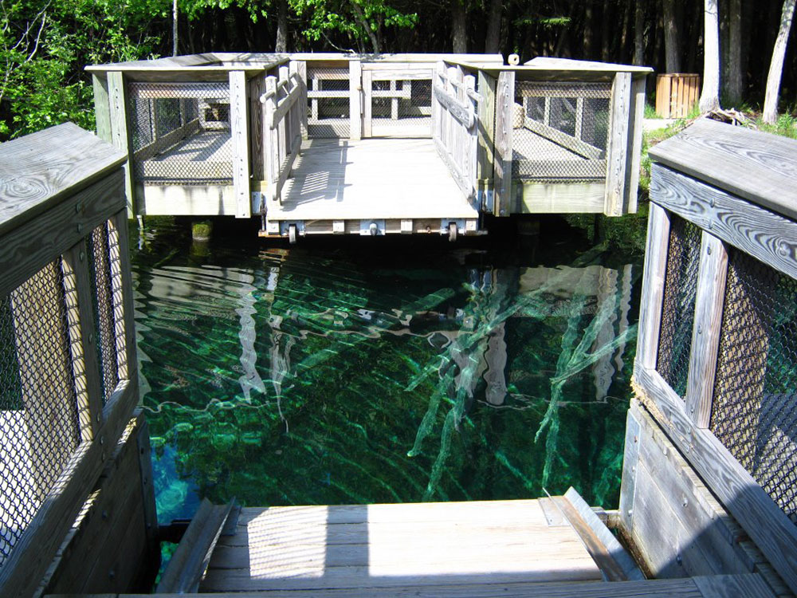
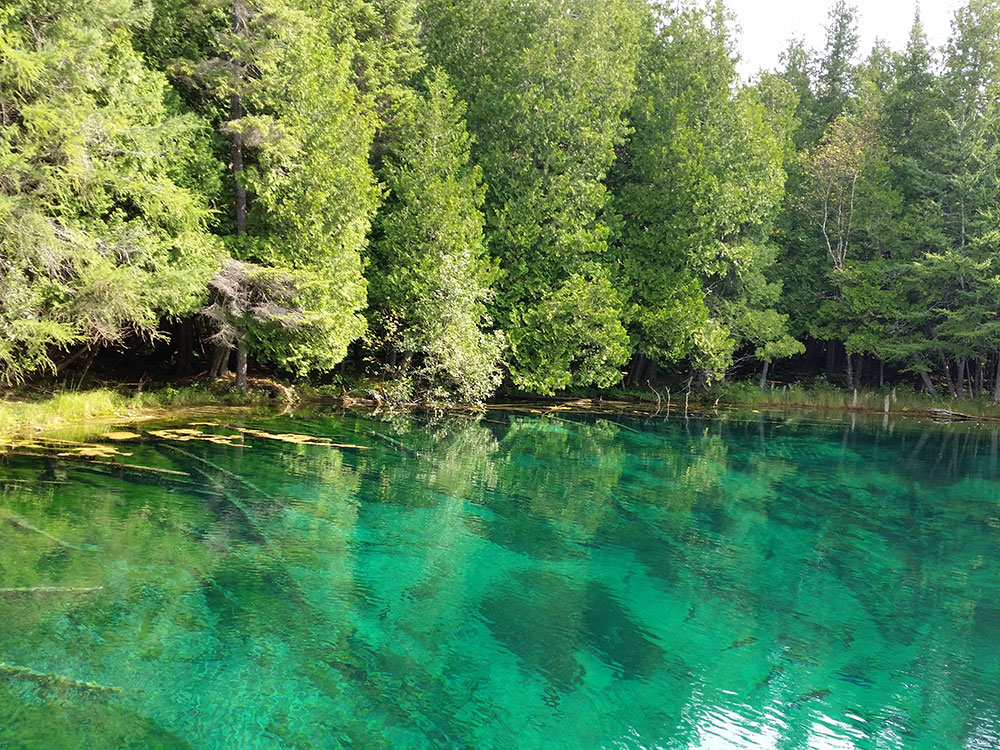
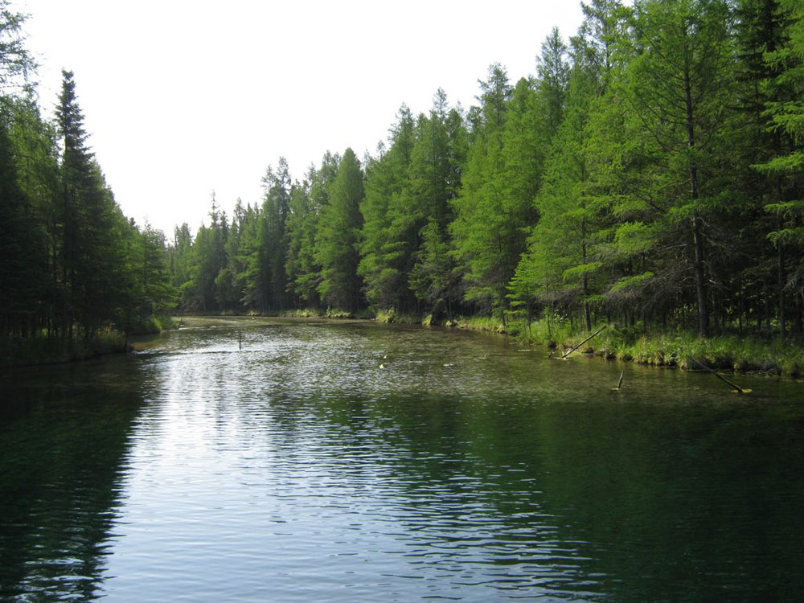

Nature preserve encompassing 388 acres in the eastern Upper Peninsula of Michigan and is noted for Kitch-iti-kipi, the "Big Spring" of the Upper Peninsula
General Information
Open year-round
Observation raft and primary visitor area open from 8:00am to dusk
Nonresident Daily Pass: $12
Nonresident Annual Pass: $42
Michigan resident Recreation Passport fees vary based on vehicle registration
How to Get There
From Manistique, MI (11 mi): Take M-149 north from US-2 for approximately 11 miles to the northern end of M-149, then follow signs to Palms Book State Park at 1380 Sawmill Road, home to Kitch-iti-kipi, Michigan's largest freshwater spring.
Overview
Palms Book State Park is a publicly owned nature preserve encompassing 388 acres (157 ha) in the eastern Upper Peninsula of Michigan. The state park is noted for Kitch-iti-kipi, the "Big Spring" of the Upper Peninsula.
During the 1930s, workers with the Civilian Conservation Corps assisted in making park improvements that included construction of an observation raft, dock, and ranger's quarters.
Kitch-iti-kipi, the spring, is a pool of clear water 400 feet (120 m) across in its largest dimension, and up to 40 feet (12 m) deep. The spring water can be seen from above as it wells upward through the pond's bottom of bedrock limestone and sand, creating a continual pattern of random eddies and cross-currents in the depths of the pond. To the Anishinaabe people that were the original inhabitants of much of the Upper Peninsula, this site was a place of mystery and wonder. The water is 45 °F (7 °C) in both winter and summer.
Since the days of the Civilian Conservation Corps in the 1930s, the state has operated a manually propelled observation raft. The raft, which is fixed by cables, carries visitors onto the spring pond, allowing the depths of the pond to be seen from above. The pond is stocked with trout.
More than 10,000 gallons (40,000 liters) of water per minute pass from the pond into nearby Indian Lake. Palms Book State Park protects approximately 1 mile (1.6 km) of lake frontage.
Things to Do
Visit the Famous Kitch-iti-kipi Spring
Palms Book State Park is home to Kitch-iti-kipi, Michigan's largest natural freshwater spring and one of the Upper Peninsula's most iconic attractions. Known as the "Big Spring," Kitch-iti-kipi produces more than 10,000 gallons of crystal-clear water per minute and maintains a constant temperature of approximately 45°F (7°C) year-round. Visitors can see vibrant aquatic plants, fish, and underwater limestone formations through the remarkably clear water.
Ride the Self-Operated Observation Raft
A unique hand-operated observation raft allows visitors to glide across the spring while looking directly into the water through an opening in the center of the platform. The raft provides exceptional views of trout, ancient tree trunks resting on the spring bottom, and the bubbling vents that feed the spring.
Enjoy Picnicking and Relaxation
The park features picnic areas, open green spaces, and a peaceful forest setting. Many visitors stop at Palms Book State Park while traveling through Michigan's Upper Peninsula to enjoy a relaxing break and experience one of the state's most remarkable natural wonders.
Observe Wildlife and Natural Beauty
The spring and surrounding woodlands support a variety of wildlife, including waterfowl, fish, turtles, and songbirds. The park's tranquil setting makes it a popular destination for photography, nature observation, and enjoying the beauty of Michigan's natural landscapes.
Visit Year-Round
Kitch-iti-kipi remains a popular destination in every season. Summer highlights the spring's vivid colors, while winter offers a unique opportunity to see open water surrounded by snow-covered forests due to the spring's constant temperature and flow.
Top Trails
Kitch-iti-kipi Viewing Path
Length: Approximately 0.25 miles round trip
Elevation Gain: Minimal
Difficulty: Easy
This short accessible pathway connects the parking area to the spring and observation raft. Visitors can enjoy interpretive signage and scenic views while approaching Michigan's largest freshwater spring.
Palms Book Nature Walk
Length: Approximately 0.5 miles round trip
Elevation Gain: Minimal
Difficulty: Easy
Short walking areas around the park provide opportunities to explore the surrounding forest, observe wildlife, and enjoy the peaceful natural setting that surrounds Kitch-iti-kipi.
Big Spring Recreation Area Walks
Length: Variable distances available
Elevation Gain: Minimal
Difficulty: Easy
Visitors can enjoy casual walks around the park grounds, picnic areas, and viewing locations while taking in the beauty of the spring and nearby wetlands.
Sources: Michigan Department of Natural Resources official Palms Book State Park information, including details on Kitch-iti-kipi (The Big Spring), observation raft, wildlife viewing, park facilities, and visitor amenities. https://www.michigan.gov/dnr/places/state-parks/palms-book-state-park
Additional information verified through Michigan DNR visitor resources covering the spring's hydrology, recreational opportunities, accessibility features, and year-round attractions at Palms Book State Park.
This article uses material from the Wikipedia article "Palms Book State Park", which is released under the Creative Commons Attribution-Share-Alike License 3.0



.jpg){kind=link}
